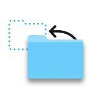
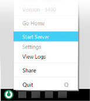

We backed up your old Sandbox content, just in case.
To restore it, follow these steps:

1. Stop your Sandbox server.
2. Go to your backup directory:

3. Copy the backed up content and paste it into the parent directory.

4. Restart your Sandbox server.